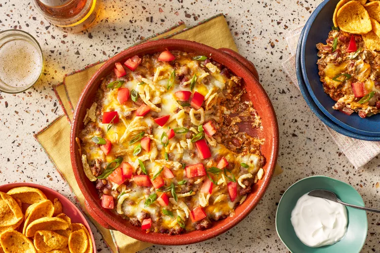

| 1 (8-ounce) package cream cheese, softened 1 teaspoon onion powder 1/4 cup sour cream, divided 2 tablespoons canola oil 1 pound 80/20 ground beef 1 teaspoon kosher salt, plus more to taste 1 (15-ounce) can chili with beans or 2 cups homemade chili with beans 4 ounces pre-shredded Mexican-style 4-cheese blend (about 1 cup) 1 green onion, sliced 1 plum tomato, chopped (about 1/2 cup) 1/4 cup crispy fried onions (such as French’s) Corn chip scoops (such as Fritos Scoops), for serving |
| Step-1. Preheat the oven to 350°F. |
Step-2. Stir together the cream cheese, onion powder, and 2 tablespoons of the sour cream until thoroughly blended. Use a silicone spatula or the back of a spoon to spread the cream cheese mixture into the bottom and sides of a 9-inch deep pie plate or 10-inch oven-safe skillet. Set aside until ready to use. |
Step-3. Heat the oil in a large nonstick skillet over medium-high heat. Add the ground beef and salt and cook, breaking up the meat into smaller pieces with a wooden spoon and stirring occasionally, until browned, crispy in some spots, and most moisture has evaporated, 8 to 10 minutes. Transfer cooked beef to a paper towel-lined plate to drain. Do not wipe the skillet clean. Add the chili to the skillet and bring to a simmer over medium-high heat, stirring occasionally. Remove from heat, and stir in the reserved beef. Season with additional salt to taste. |
|---|
|  |
| Step-4. Spoon the chili mixture over the cream cheese layer, then sprinkle with cheese. Bake until the cheese is melted and the dip is warmed through, about 20 minutes. Top with green onions, tomatoes, and crispy fried onions. Serve with Frito’s scoops and remaining 2 tablespoons of sour cream. |
|---|